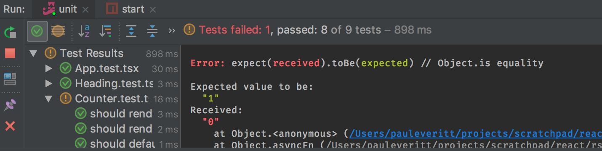

Rich Events and Testing¶
Our counter component has local state, but doesn’t respond to clicks. We need to add event handlers, which we first introduced in JSX and ES6.
We’ll do so, of course, by writing tests first. This requires a small addition to our flow of test writing, but once mastered, it’s easy and useful.
Like in previous steps, start with the following setup:
Counter.tsxandCounter.test.tsxin side-by-side tabs- Start the
Jestrun configuration - Stop the
startrun configuration
First Failing Test¶
Let’s start with a failing test that clicks on the div and checks if the
number is updated. In Counter.test.tsx, clone the first test and change
it as follows:
it('should increment the count by one', () => {
const wrapper = shallow(<Counter/>);
expect(wrapper.find('.counter span').text())
.toBe('1');
wrapper.find('.counter').simulate('click');
expect(wrapper.find('.counter span').text())
.toBe('2');
});
This test makes a component instance, checks its initial value, pretends to
click using simulate, then checks the final value.
It fails. Which is good!
What’s really good: that was dead simple. In one line we automated doing a click and checking the result. Much more pleasurable than switching to the browser and clicking everything in your app to see if your change works without breaking the universe.
onClick Handler¶
The component doesn’t handle clicks. Let’s head to Counter.tsx and add
a click handler:
<div
className="counter"
onClick={() => this.setState({count: this.state.count + 1})}
>
<label>{this.props.label}</label>
<span>{this.state.count}</span>
</div>
That doesn’t work, for the reasons discussed in the bossy TSLint explanation. Instead, we’ll do the correction that section suggests: make a public method and refer to it in the handler:
public handleClick = () => {
this.setState({count: this.state.count + 1});
}
public render() {
return (
<div
className="counter"
onClick={this.handleClick}>
<label>{this.props.label}</label>
<span>{this.state.count}</span>
</div>
);
}
With this in place, let’s now fix our test to expect starting at zero:
it('should increment the count by one', () => {
const wrapper = shallow(<Counter/>);
expect(wrapper.find('.counter span').text())
.toBe('0');
wrapper.find('.counter').simulate('click');
expect(wrapper.find('.counter span').text())
.toBe('1');
});
Awesome, our tests now all pass.
Advance By Ten with Shift-Click¶
Let’s add one more feature: if you click with the Shift key pressed, you increase by 10. Along the way, let’s add more type information to better benefit from TypeScript.
The handleClick arrow function actually gets an event passed, which
we aren’t using. Let’s add it in:
public handleClick = (event) => {
this.setState({count: this.state.count + 1});
}
This works but TypeScript gives a compiler error. Our tsconfig.json
disallows implicit any. That’s easy enough to solve:
public handleClick = (event: any) => {
this.setState({count: this.state.count + 1});
}
But that’s cheating. What type is that event? It’s a MouseEvent. Let’s
put the correct typing on the argument:
public handleClick = (event: React.MouseEvent<HTMLElement>) => {
this.setState({count: this.state.count + 1});
}
Ugh, that’s a lot of keystrokes. Is it worth it? Let’s show why. First, in
handleClick, let’s determine the value to increment by, first as a mistake:
public handleClick = (event: React.MouseEvent<HTMLElement>) => {
const inc = 10 ? event.shiftKey : 1;
this.setState({count: this.state.count + inc});
}
TypeScript told us that we were adding a boolean to a number. Let’s set
the type of inc explicitly, instead of inferring it. Our first fix:
const inc: number = 10 ? event.shiftKey : 1;
That’s closer. TypeScript now moves the error to the correct line. We see that we have the order wrong on the ternary…a frequent, maddening error. Here’s the correct version:
const inc: number = event.shiftKey ? 10 : 1;
Our click-handler test now fails, though. It needs a fake event object passed
into handleClick, with shiftKey in the object. Let’s fix that test,
then clone to cover the with-shift case:
it('should increment the count by one', () => {
const wrapper = shallow(<Counter/>);
expect(wrapper.find('.counter span').text())
.toBe('0');
wrapper.find('.counter').simulate('click', {shiftKey: false});
expect(wrapper.find('.counter span').text())
.toBe('1');
});
it('should shift-click increment the count by ten', () => {
const wrapper = shallow(<Counter/>);
expect(wrapper.find('.counter span').text())
.toBe('0');
wrapper.find('.counter').simulate('click', {shiftKey: true});
expect(wrapper.find('.counter span').text())
.toBe('10');
});
Our tests pass. We have a test to handle the new shift-click implementation. Moreover, we have type information to help us when we pass in the wrong data, even from a test.
As we have been doing, give this a try in the browser by firing up the
start run configuration and clicking, then shift-clicking, in the browser.
When done, terminate the start process.